Laboratorio 3: Crear compuertas de paso¶
En este laboratorio se crearán distintas compuertas de paso y se utilizarán para crear compuertas sequenciales
Contenidos del laboratorio
Objetivos¶
- Comprender el funcionamiento de los Latches y Flip Flops y Muxes
- Reconocer las ventajas y desventajas de utilizar compuertas de paso
- Comprender por medio de simulaciones el tiempo de setup
Procedimiento¶
Creación y simulación: compuertas de paso¶
Nota
Todas las celdas que construya deberán tener las siguientes características: Los transistores NMOS ocuparan la parte inferior de la celda y los PMOS la parte superior; las entradas y salidas se conectaran por medio de contactos de metal 2, aparte de esto ningún metal2 o 3 deberá ser utilizado dentro de las celdas.
Crear una compuerta de paso con las siguientes dimensiones que se indican en la tabla. Crear tanto la vista de layout como la de icono y esquemático.
Tabla 6 Dimensiones de la compuerta de paso¶ PMOS NMOS 10𝞴 10𝞴 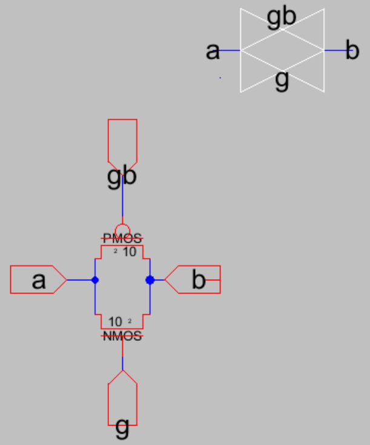Figura 60 Ícono y esquemático de la compuerta de paso
El layout de esta compuerta es un poco diferente si se comparacon una compuerta como una NAND o NOR. Se debe realizar como se muestra continuación. Recuerde agregar los taps y conectar el poso P a tierra y el N a vdd
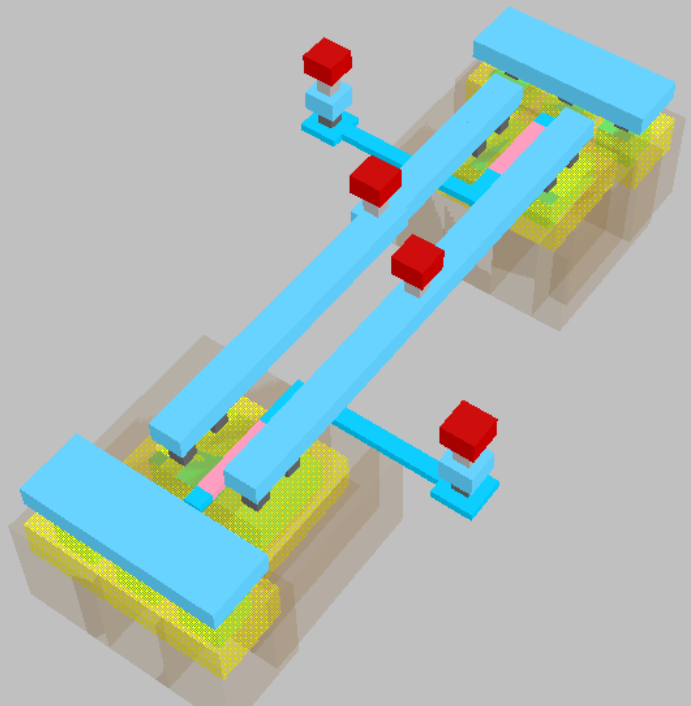Figura 61 Layout de la compuerta de paso
Simule esta compuerta, para comprobar que funcione como se espera
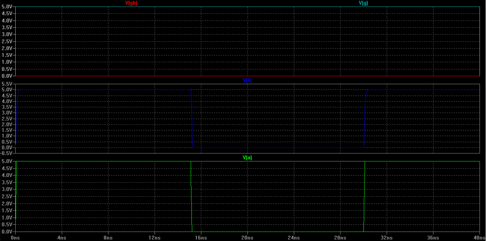Figura 62 Simulación de la compuerta de paso
Qué ocurre con los niveles de voltaje a la salida si solo se utilizaran un transistor de paso. Realice una simulación para justificar porque se usa una compuerta de paso en lugar de un solo transistor de paso
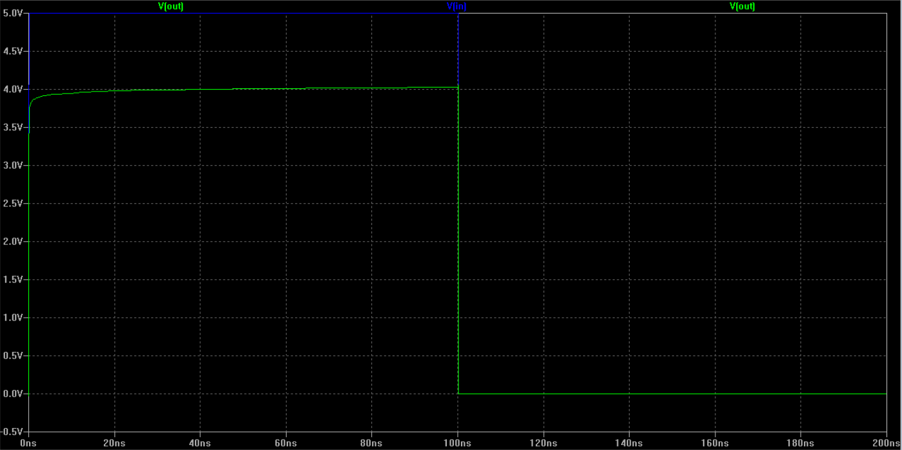Figura 63 Simulación del transitor de paso
Cambie el voltaje de umbral en el archivo de proceso. Utilice el voltaje de umbral por defecto ±200𝑚𝑉.Que sucede con el voltaje de salida?
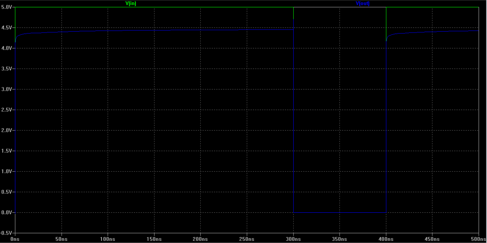Figura 64 Variación del voltaje de umbral
Utilizando compuertas de paso construya un mux 2:1, Simúlela para comprobar que estén bien construida. Suponga que cuenta tanto con la entrada de selección como con la entrada de selección negada
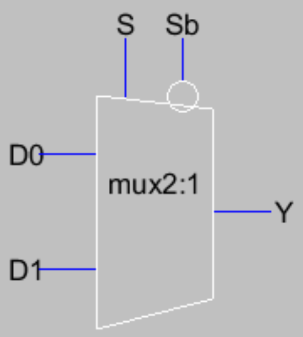Figura 65 Ícono del mux2:1
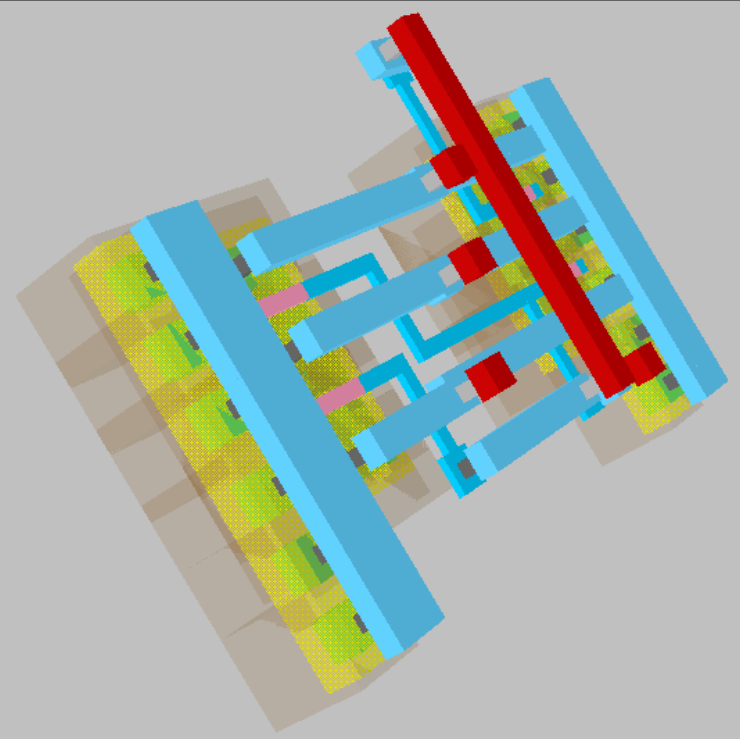Figura 66 Layout del mux2:1
Utilizando compuertas nand construya la misma compuerta y el mismo mux 2:1
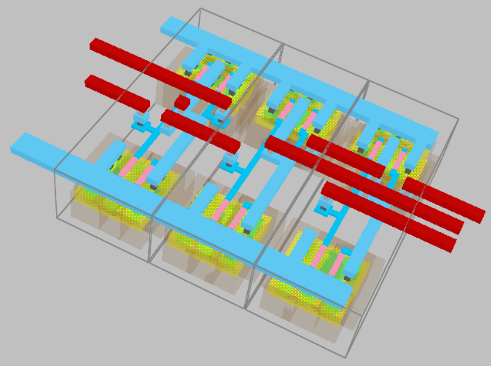Figura 67 Layout del mux2:1 usando compuertas nand
Cuáles son las ventajas y desventajas de usar compuertas de paso comparándolas con compuertas estándar. Compárelas en área, tamaño y potencia
Imagine que en lugar de un mux 2:1 tiene un mux 3:1, o que no cuenta no cuenta tango con la entrada negada, que podría suceder en ese caso, investigue sobre “mux contention” y explique que sucedería
{kind=link}
{kind=link}
{kind=link}
{kind=link}
{kind=link}
{kind=link}
{kind=link}
{kind=link}
Creación y simulación: latches y Flip Flops¶
Construya un latch de fase positiva, tanto el layout como el esquemático
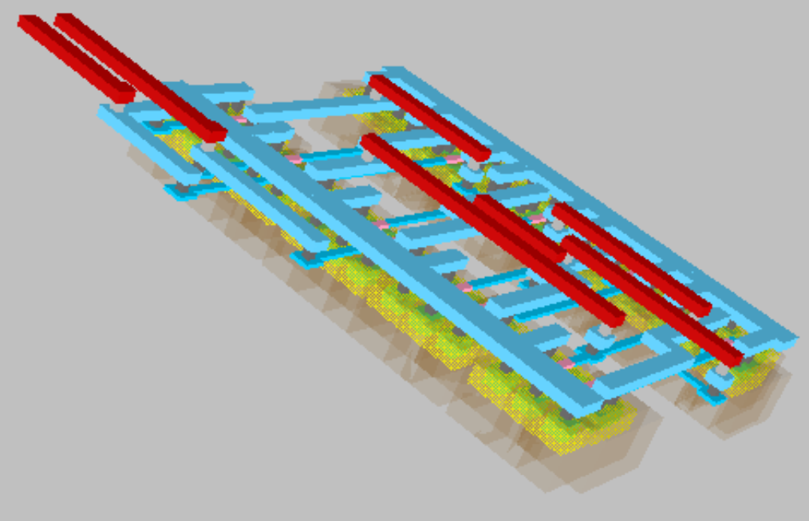Figura 68 Layout del latch
Simule el latch que acaba de construir, haga la entrada variar de forma que pueda comprobar que el latch funciona como se espera
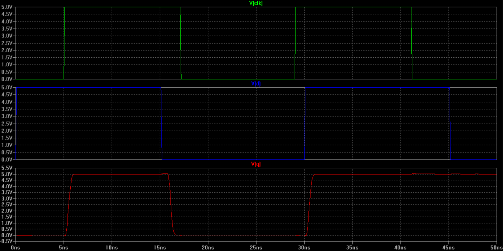Figura 69 Simulación del latch
Realice una simulación que le permita encontrar el tiempo de setup, como referencia puede tomar la figura a continuación. Que representa el tiempo de setup en el circuito?
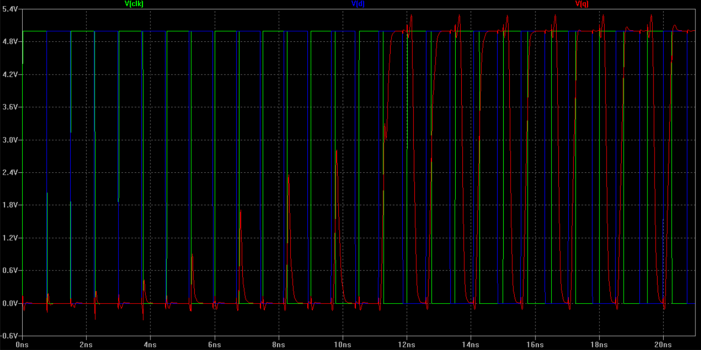Figura 70 Tiempo de setup del latch
Utilizando la misma técnica encuentre el tiempo de hold para el latch
Analice qué efectos puede tener ruido en la señal de reloj. Qué pasa si durante la fase negativa del reloj se produce un evento de ruido. Explique
Utilizando el latch que acaba de construir, construya un FF de flaco positivo
Encuentre el tiempo de setup para el FF
{kind=link}
{kind=link}
{kind=link}